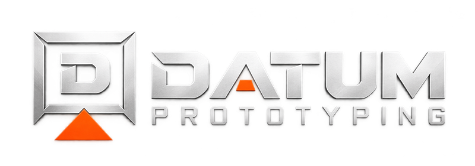

Opgaven
Bevar idéen og det overordnede design fra det eksisterende værktøj, men udfør det i aluminium og stål til brug på GF1.

← Alle projekterDP / 002 / SPECIALVÆRKTØJ
Et undervisningsværktøj udviklet som en mere robust løsning i metal. Opgaven gik fra opmåling og CAD til CNC-fremstilling og praktisk afprøvning.

PROJEKT PROCES
Projektet er dokumenteret ud fra ansvar, udfordring, fremgangsmåde og resultat.
Bevar idéen og det overordnede design fra det eksisterende værktøj, men udfør det i aluminium og stål til brug på GF1.
Det oprindelige 3D-printede værktøj brød sammen under den første afprøvning. Opgaven var derfor at bevare funktionsprincippet og udføre konstruktionen i aluminium og stål til undervisningsbrug.
Jeg målte det eksisterende værktøj op og modellerede delene i Fusion 360. Konstruktionen blev udført i aluminium med bukker og cylindre i stål. Alle dele blev fremstillet på Haas Mini Mill.
Ringbøjeren blev afprøvet sammen med underviseren efter fremstillingen og fungerede uden problemer.
Projektet gav mig erfaring med at omsætte et konkret behov til et færdigt værktøj: fra opmåling af en eksisterende model til CAD, materialevalg og CNC-fremstilling.
RELATED WORK
Andre opgaver fra samme periode af uddannelsen.
NÆSTE OPGAVE